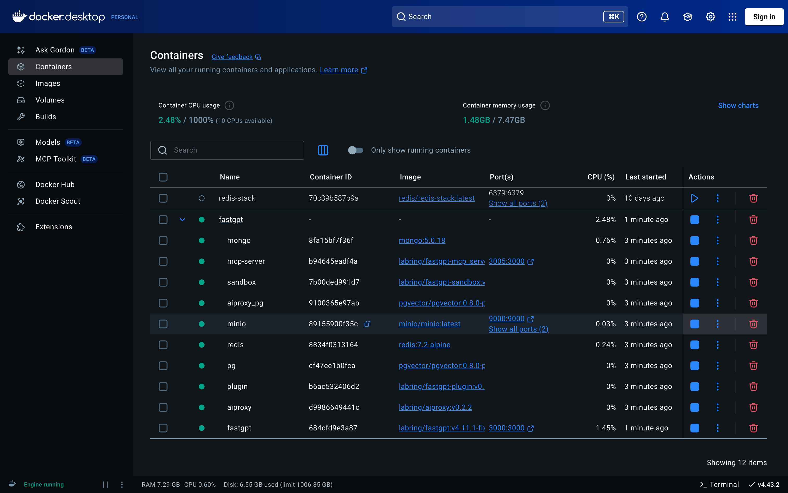
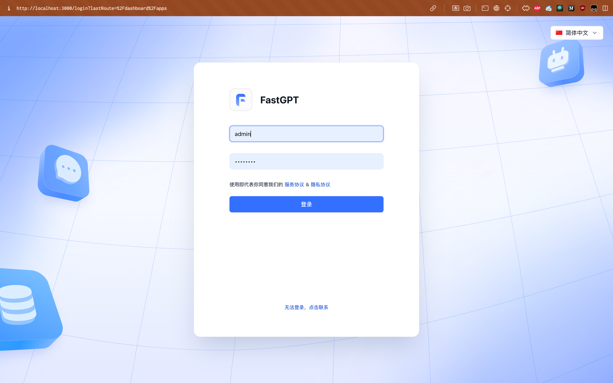
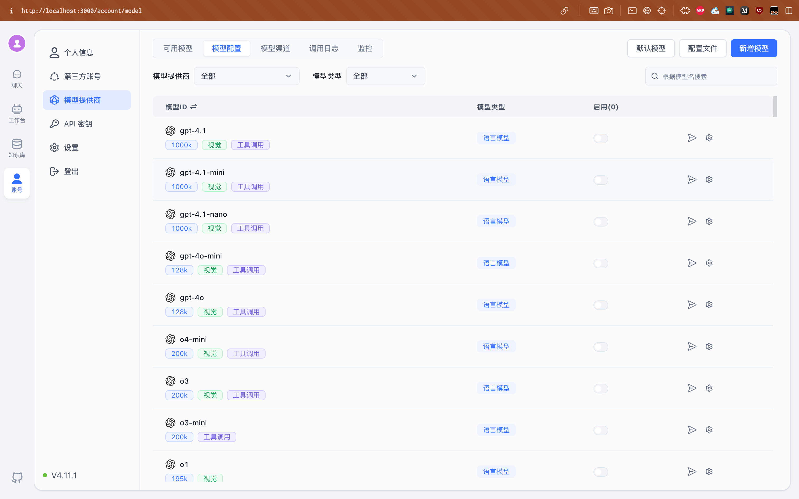
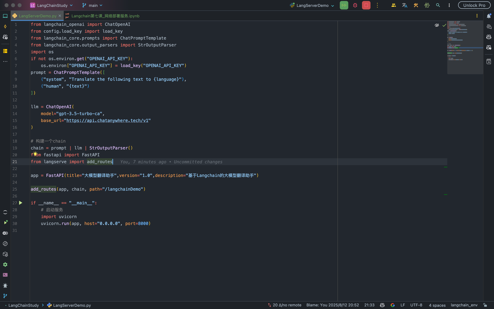
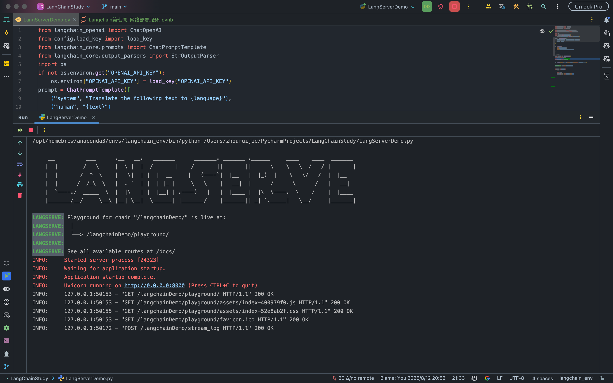
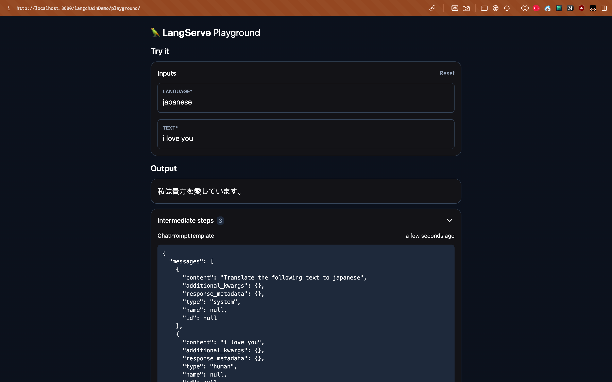
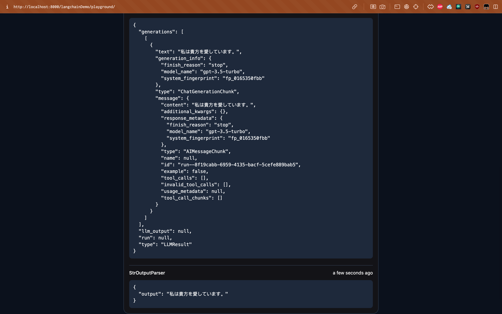
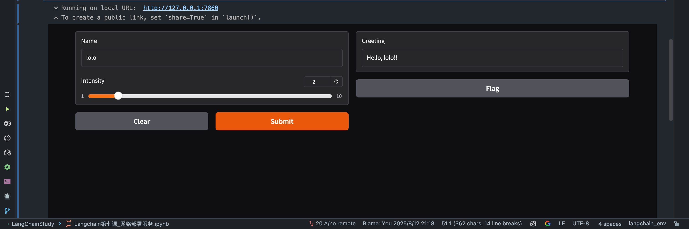
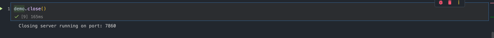
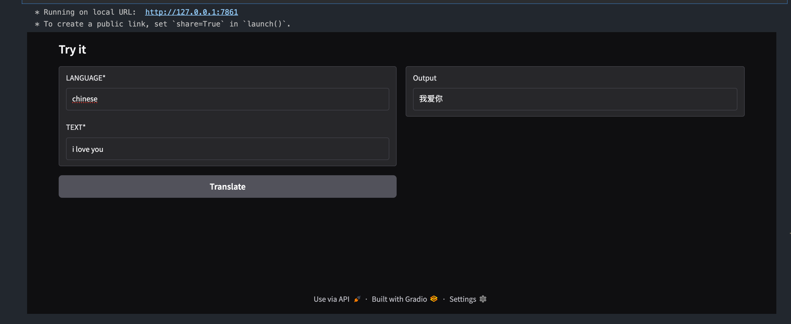

FastGPT构建RAG
FastGPT使用GPT模型，也可以使用自己构建的大模型，使用GPT模型来测试一下 如果要对接多个模型，可以与one-api进行部署
使用Docker部署FastGPT
https://doc.fastgpt.io/docs/introduction/development/docker#pgvector%E7%89%88%E6%9C%AC
mkdir fastgpt
cd fastgpt
curl -O https://raw.githubusercontent.com/labring/FastGPT/main/projects/app/data/config.json
# pgvector 版本(测试推荐，简单快捷)
curl -o docker-compose.yml https://raw.githubusercontent.com/labring/FastGPT/main/deploy/docker/docker-compose-pgvector.yml
# oceanbase 版本（需要将init.sql和docker-compose.yml放在同一个文件夹，方便挂载）
# curl -o docker-compose.yml https://raw.githubusercontent.com/labring/FastGPT/main/deploy/docker/docker-compose-oceanbase/docker-compose.yml
# curl -o init.sql https://raw.githubusercontent.com/labring/FastGPT/main/deploy/docker/docker-compose-oceanbase/init.sql
# milvus 版本
# curl -o docker-compose.yml https://raw.githubusercontent.com/labring/FastGPT/main/deploy/docker/docker-compose-milvus.yml
# zilliz 版本
# curl -o docker-compose.yml https://raw.githubusercontent.com/labring/FastGPT/main/deploy/docker/docker-compose-zilliz.yml
后续修改config.json与compose文件，需要更改模型以及向量模型



部署大模型网络服务
通过将部署为服务进行调用
- LangServer进行部署
- Gradio进行部署
https://python.langchain.com/docs/langserve/
简单完善，功能易上手
1-安装LangServer依赖
!pip install "langserve[all]"
2-构建一个chain
from langchain_openai import ChatOpenAI
from config.load_key import load_key
from langchain_core.prompts import ChatPromptTemplate
from langchain_core.output_parsers import StrOutputParser
import os
if not os.environ.get("OPENAI_API_KEY"):
os.environ["OPENAI_API_KEY"] = load_key("OPENAI_API_KEY")
prompt = ChatPromptTemplate([
("system", "Translate the following text to {language}"),
("human", "{text}")
])
llm = ChatOpenAI(
model="gpt-3.5-turbo-ca",
base_url="https://api.chatanywhere.tech/v1"
)
# 构建一个chain
chain = prompt | llm | StrOutputParser()
# 调用chain
print(chain.invoke({"language": "Chinese", "text": "hello world"}))
#结果
你好，世界
3-构建langserve服务器
# 构建langserver服务端
from fastapi import FastAPI
from langserve import add_routes
app = FastAPI(title="大模型翻译助手",version="1.0",description="基于Langchain的大模型翻译助手")
add_routes(app, chain, path="/langchainDemo")
# 启动服务
import uvicorn
uvicorn.run(app,host="0.0.0.0",port=8000)注意，在jupyter运行时，不能调用进行启动，jupyter本身就是一个web服务，我们可以把代码整合到python文件中


输入网址 ：localhost:8000/langchainDemo/playground


4-也可以使用client来进行访问
from langserve import RemoteRunnable
client = RemoteRunnable("http://localhost:8000/langchainDemo")
client.invoke({"language": "Chinese", "text": "hello world"})利用Gradio部署前端页面
Gradio是Huggingface开源的构建交互式WEB应用程序的库，方便的构建一个前端页面。
1-下载依赖
!pip install —upgrade gradio
import gradio as gr
def greet(name,intensity):
return "Hello, " + name + "!" * int(intensity)
demo = gr.Interface(
fn=greet,
inputs=[
gr.Textbox(label="Name", placeholder="Enter your name here..."),
gr.Slider(label="Intensity", minimum=1, maximum=10, step=1, value=1)
],
outputs=gr.Textbox(label="Greeting")
)
demo.launch()
demo.close()

通过大模型实现之前的效果
import gradio as gr
from langchain_core.prompts import ChatPromptTemplate
from langchain_openai import ChatOpenAI
from langchain_core.output_parsers import StrOutputParser
# 1. 定义prompt模板
prompt = ChatPromptTemplate([
("system", "Translate the following text to {language}"),
("human", "{text}")
])
# 2. 初始化大模型接口
llm = ChatOpenAI(
model="gpt-3.5-turbo-ca",
base_url="https://api.chatanywhere.tech/v1"
)
# 3. 构建完整的chain
chain = prompt | llm | StrOutputParser()
# 4. 定义调用chain的翻译函数
def translate(language, text):
inputs = {"language": language, "text": text}
result = chain.invoke(inputs)
return result
# 5. Gradio界面搭建
with gr.Blocks() as demo:
gr.Markdown("## Try it")
with gr.Row():
with gr.Column():
language = gr.Textbox(label="LANGUAGE*", value="japanese")
text = gr.Textbox(label="TEXT*", value="i love you")
translate_btn = gr.Button("Translate")
output = gr.Textbox(label="Output")
# 6. 绑定按钮事件，调用翻译函数并显示结果
translate_btn.click(fn=translate, inputs=[language, text], outputs=output)
demo.launch()
